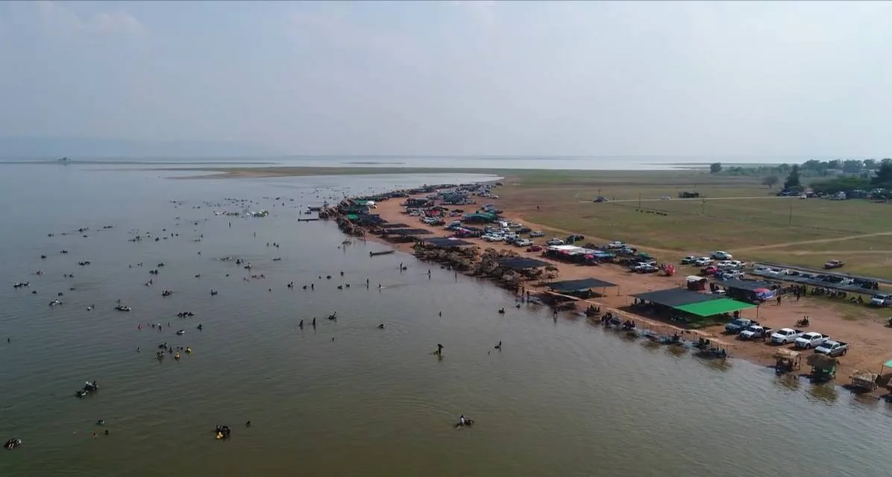

อำเภอเมืองหนองบัวลำภู15 ตำบล · 154 หมู่บ้าน
135,419คน907.56 ตร.กม.PROVINCE PROFILEข้อมูลทั่วไป
ข้อมูลทั่วไป
จังหวัดหนองบัวลำภู
พื้นที่ 3,859.1 ตร.กม. · 6 อำเภอ · 59 ตำบล · ประชากร 502,088 คน
ประชากร502,088คน
ชาย / หญิง49.7 / 50.3ร้อยละ
ครัวเรือน163,997หลังคาเรือน
หมู่บ้าน / ชุมชน688 / 33แห่ง
01 · TERRITORY & PEOPLE6 อำเภอ
6 อำเภอ
แต่ละพื้นที่มีบริบทต่างกัน
อำเภอศรีบุญเรือง12 ตำบล · 158 หมู่บ้าน
107,955คน830.64 ตร.กม.อำเภอนากลาง9 ตำบล · 127 หมู่บ้าน
90,992คน570.70 ตร.กม.อำเภอโนนสัง10 ตำบล · 107 หมู่บ้าน
63,961คน577.74 ตร.กม.อำเภอนาวัง5 ตำบล · 51 หมู่บ้าน
36,604คน326.37 ตร.กม.อำเภอสุวรรณคูหา8 ตำบล · 91 หมู่บ้าน
67,157คน646.08 ตร.กม.02 · INTERACTIVE MAPแตะหรือ Hover
แตะหรือ Hover
เพื่อสำรวจข้อมูลรายอำเภอ
ข้อมูลประชากร พื้นที่ ตำบล หมู่บ้าน และครัวเรือนเชื่อมจากแผนพัฒนาจังหวัดแล้ว ส่วนข้อมูลโครงการรายอำเภอจะเพิ่มเมื่อได้รับชุดข้อมูลพื้นที่ดำเนินงาน
แผนที่ Interactive แยก 6 อำเภอ · ใช้ข้อมูลการปกครองและประชากรจากแผนพัฒนาจังหวัด
03 · ECONOMY & TOURISMเศรษฐกิจขยายตัว
เศรษฐกิจขยายตัว
การท่องเที่ยวฟื้นต่อเนื่อง
04 · PLACE STORYพื้นที่แห่งธรรมชาติ
พื้นที่แห่งธรรมชาติ
ประวัติศาสตร์ และศรัทธา

ที่มา: แผนพัฒนาจังหวัดหนองบัวลำภู พ.ศ. 2571–2575 · ข้อมูลประชากร ณ ธันวาคม 2568